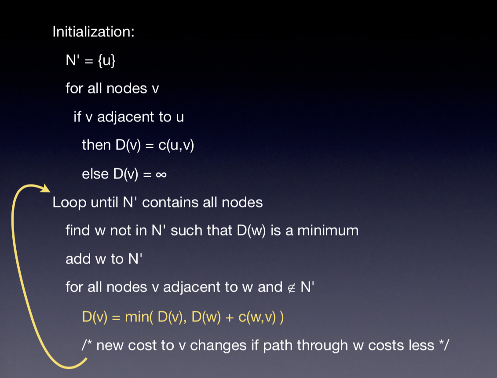

Network Layers
In the network, there are two main parts, one is network edge, the other is network core. The network edge is end system, which running applications. The network core is routers and interconnected network.
We used the layered architecture in OSI model, it can help us decompose the complexity of network, develop protocol separately. Also implementation in one layer can change without affecting other layers. In the above layers, we do not need to concern the details of lower layers.
I want to talk about 5 layers in this blog.
- physical layer
- data link layer
- network layer
- transport layer
- application layer
Application layer
This layer provides user with access to network resources. HTTP is the most popular protocol in this layer. It uses tcp as transport protocol. When we open a connection with a remote host, we will pipeline the requests. It can reduce the transport layer connection cost and reduce latency by avoiding slow-starts.
DNS is addressing mechanism in this layer. The url is not what the computer will send requests to, it is the ip of that remote host. DNS is a directory service for the Internet. DNS will translate url to ip for you.
DNS is also a hierarchical structure in name-servers. When querying a domain, we first look it up in local name servers. If there is no cache for this url, it will do iterator look up. For example, take “library.cmu.edu” as an example.
- Ask root domain name-server the address for “edu” name-server
- Ask “edu” name-server the address for “.cmu.edu” name-server
- Ask “cmu.edu” name-server the address for “library.cmu.edu”
DNS is running over UDP. DNS did not need tcp retransmission when lost, just try another nameserver. Also tcp takes long time to set up. DNS needs quick query.
We could use dig to play with DNS.
dig domainyou could use this to get the ip for that domain name server.-tspecify the type for that record “MX/PTR/A/NS/CNAME”-xinverse search
Transport layer
The mission for this layer is to build logical connections between applications which run on different hosts. The addressing mechanism is multiplex, with port number bound to different applications. Data type is segment. In this protocol, it will break data to segments and re-assembly them.
UDP is connectionless service, it means it does not need time to create the connection between the hosts. It is fast and each segment is handled independently. The problem is it is possible to lose segments and out-of-order. There is no congestion control mechanism. In its segment, it has checksum field, which could help detect errors.
Let’s talk about several real data transport protocol, which help us transmit data reliable, including Stop-n-Wait, Go Back N & Selective Repeat. Stop-n-wait is the simplest one. Sender will resend if it did not get ACK or get NACK from the receiver. The problem is it is possible to lose ACK or segment, we could not distinguish them. We may resend the same segment several time.
Go back N uses a sliding window. The receiver only send ACK for correctly-received segment with highest in-order segment. If it received out-of-order segment, it just discard them. Selective Repeat uses receiver’s sliding window to solve this problem. Receiver individually ACKs all correctly received segments and sender only resends segments for which ACK not received.
TCP is a point-to-point, reliable, pipelined protocol. It has flow control and congestion control. In the beginning, there is a three-way handshake.
- step1: send SYN segment and specifies initial seq no., no data
- step2: server respond with SYNACK segment, allocates buffers and specifies initial seq no.
- step3: replies with ACK, may contain data
The flow control make sure sender won’t overflow the receiver’s buffer by transmitting too much, too fast. Receiver advertises spare room by including value of RcvWindow in ACK segment. The congestion control is a bit harder. It has three phases.
- When CongWin is below Threshold, window grows exponentially (slow-start phase)
- When CongWin is above Threshold, window grows linearly (congestion-avoidance phase)
- When a triple duplicate ACK occurs, Threshold set to CongWin/2 and CongWin set to Threshold. Window grows linearly
- When timeout occurs, Threshold set to CongWin/2 and CongWin is set to 1 MSS. Enters slow-start phase again.
Network layer
In this layer, it provides logical connection between hosts for use in transport layer. The addressing mechanism is IP address. Packets are forwarded using address of the destination host, and packets are forwarded independently. It has two responsibilities: routing and forwarding. In routing, the routers create a forwarding table to determine end-to-end paths for each packets. The forwarding will move packets from router’s incoming interface to appropriate outgoing interface.
The routing algorithm have two type: link state and distance vector. In the first one, each node knows the whole graph, the typical one is Dijkstra’s algorithm.

For the distance link algorithm, it only has local knowledge.
- Each node periodically sends its own distance vector estimates to neighbors
- When a node x receives a new DV estimate from a neighbor v, uses B-F
- Dx(y) ←minv{c(x,v)+Dv(y)} for each y ∈ N
- The estimate Dx(y) converges to the actual dx(y) for minor, natural conditions
There are some scaling problems, in the real world, Autonomous System represents an organization controls over their own routers. There are some algorithms like OSPF, IS-IS, RIP, EIGRP solve the routing problem.
Dynamic Host Configuration Protocol help solve limited IP address problem. NAT(Network Address Translation) uses port number in the router and allow subnet ip allocation.
Data link layer
In this layer, addressing mechanism is MAC address. It transfers frames from one node, over a link.
It uses CDMA/CD protocol, we means Carrier Sense: Listen before talking,Multiple Access: Broadcast Medium and Collision Detection: Listen as you talk. If you hear someone else, be quiet.
Physical layer
In this layer, it just send bits by bits.